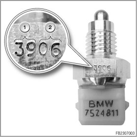

Reversing Light Lights Up Always; PDC, If Fitted, Always Active; and Navigation Malfunction
Graphic: Reversing light lights up always; PDC, if fitted, always active; and navigation malfunction
Check of the date of manufacture of the reversing-light switch
Index Explanation
1 Calendar week
2 Year
